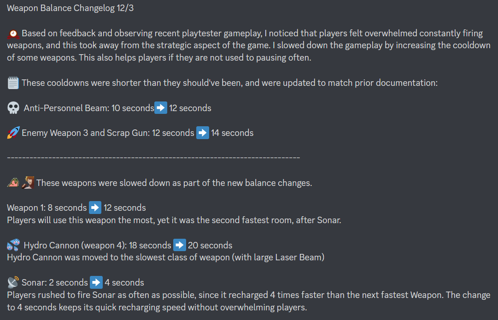

Final Entry and Reflection (11/27/22 to 12/11/22)
Introduction
The final week of QA work on Project Light and the following week.
Final Final Balancing
As mentioned in the previous blog post, I slowed many weapons and other abilities down so that players
could take more time processing the rest of the game as well as incoming attacks from the enemy ship.
I also adjusted some values that were not up to date with documentation.

Reflection
The most important takeaway from this semester with WolverineSoft was the dynamics of a large development team.
Diversifying into multiple different departments resulted in so many more features and content, but also led
to many challenges with communication. Documentation proved more important than ever before, but even then
many topics or ideas were lost in the sea of messages. The importance of communication isn't new but visiting it
from a new perspective was valuable.
Gaining experience with dev tools--Figma and Unity--was also a great reward. Although I wish the designers
could have received an introduction to these tools even earlier in the process, I'm very grateful to the
project leads who took the time to show us the ropes.
Approximate hours breakdown:
In all honesty, I wrote my previous blogpost as if it was the final one and did not realize that THIS one was the actual last one. As such I did not track hours as meticulously but made sure to finish strong with my contributions.